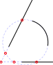

- Après avoir activé cet outil, cliquez sur la première des deux entités
qui se croisent.
- Cliquez sur la seconde des deux entités qui se croisent. Si deux points
d'intersection sont possibles, assurez-vous de cliquer sur la deuxième
entité quelque part plus près du point d'intersection auquel vous voulez
vous accrocher.
